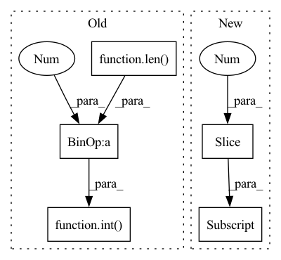

Pattern ID :25943
Before Change
:return: (bool)
observation = observation["observation"] if isinstance(observation, dict) else observation
o1 = observation[0:int(len( observation[:-3]) /2 ) ] if self.reward_type == "2dvu" else observation[0:3]
o2 = observation[int(len(observation[:-3])/2):-3]if self.reward_type == "2dvu" else observation[3:6]
self.current_norm_distance = self.calc_distance(o1, o2)
return self.current_norm_distance < self.thresholdAfter Change
observation = observation["observation"] if isinstance(observation, dict) else observation
// goal is first in obs and griper is last (always)
goal = observation[0:3]
gripper = self.env.reward.get_accurate_gripper_position(observation[-3:] )
self.current_norm_distance = self.calc_distance(goal, gripper)
return self.current_norm_distance < self.threshold
In pattern: SUPERPATTERN
Frequency: 3
Non-data size: 5
Instances Fragment ID: 78349547
Project Name: incognite-lab/mygym
Commit Name: 6cd18a4b131c2aea3092f606545af44993fdeffc
Time: 2021-08-20
Author: vitek.zacek9@gmail.com
File Name: myGym/envs/task.py
M Class Name: TaskModule
N Class Name: TaskModule
M Method Name: check_distance_threshold(2)
N Method Name: check_distance_threshold(2)
M Parent Class:
N Parent Class:
M File Name: myGym/envs/task.py
N File Name: myGym/envs/task.py
M Start Line: 218
M End Line: 220
N Start Line: 258
N End Line: 261
Before Change
bags_LUAD_path = pd.read_csv("datasets/LUAD.csv")
bags_LUSC_path = pd.read_csv("datasets/LUSC.csv")
cut_LUAD = int(len(bags_LUAD_path)*0.8)
cut_LUSC = int(len( bags_LUSC_path) *0.8 )
train_bags_LUAD_path = bags_LUAD_path.iloc[0:cut_LUAD, :]
train_bags_LUSC_path = bags_LUSC_path.iloc[0:cut_LUSC, :]
test_bags_LUAD_path = bags_LUAD_path.iloc[cut_LUAD:, :]
test_bags_LUSC_path = bags_LUSC_path.iloc[cut_LUSC:, :]After Change
scheduler = torch.optim.lr_scheduler.CosineAnnealingLR(optimizer, args.num_epoch, 0)
bags_path = pd.read_csv("datasets/tcga-dataset/TCGA.csv")
train_path = bags_path.iloc[0:int(len(bags_path)*0.8), :]
test_path = bags_path.iloc[int(len(bags_path)*0.8):, :]
for epoch in range(1, args.num_epoch):
train_path = shuffle(train_path).reset_index(drop=True) Fragment ID: 78349545
Project Name: binli123/dsmil-wsi
Commit Name: 85d914d0cca31c59f5e76e7894fadb15e8d2659d
Time: 2020-11-19
Author: bli346@wisc.edu
File Name: .ipynb_checkpoints/train_tcga-checkpoint.py
M Class Name: AnonimousClass
N Class Name: AnonimousClass
M Method Name: main(0)
N Method Name: main(0)
M Parent Class:
N Parent Class:
M File Name: .ipynb_checkpoints/train_tcga-checkpoint.py
N File Name: .ipynb_checkpoints/train_tcga-checkpoint.py
M Start Line: 125
M End Line: 135
N Start Line: 125
N End Line: 131
Before Change
if 1 < len(objects):
if len(objects) % 2:
captions = [objects[2 * i + 1]
for i in range(int(len( objects) / 2 ) )]
else:
raise Exception("Line %s: unexpected number "
"of quotes in filename" % line)After Change
log.warning("Line %s: unexpected number "
"of quotes" % line)
else:
captions.append(caption.replace("\\", "")[1:-1] )
else:
image = objects[0][:-1]
captions = [] Fragment ID: 78349550
Project Name: openvinotoolkit/datumaro
Commit Name: 551fa11a820347080aaa92b43cac2fe61f1691a6
Time: 2021-07-22
Author: kirill.sizov@intel.com
File Name: datumaro/plugins/icdar_format/extractor.py
M Class Name: _IcdarExtractor
N Class Name: _IcdarExtractor
M Method Name: _load_recognition_items(1)
N Method Name: _load_recognition_items(1)
M Parent Class: SourceExtractor
N Parent Class: SourceExtractor
M File Name: datumaro/plugins/icdar_format/extractor.py
N File Name: datumaro/plugins/icdar_format/extractor.py
M Start Line: 58
M End Line: 72
N Start Line: 59
N End Line: 70